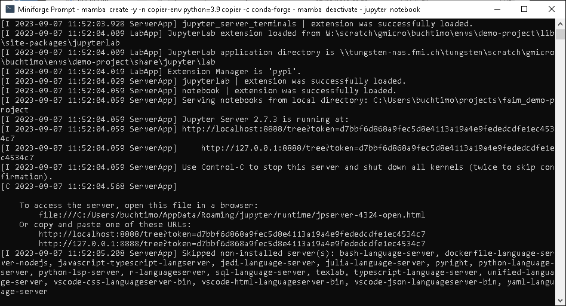
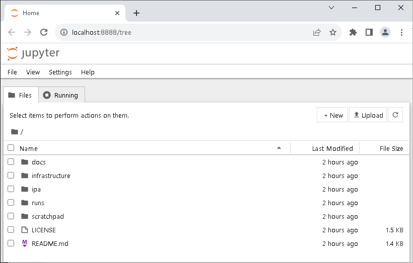
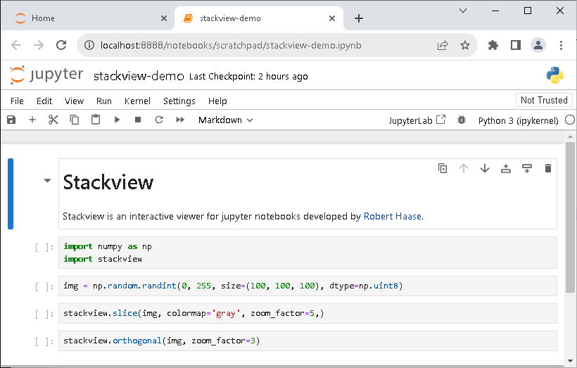
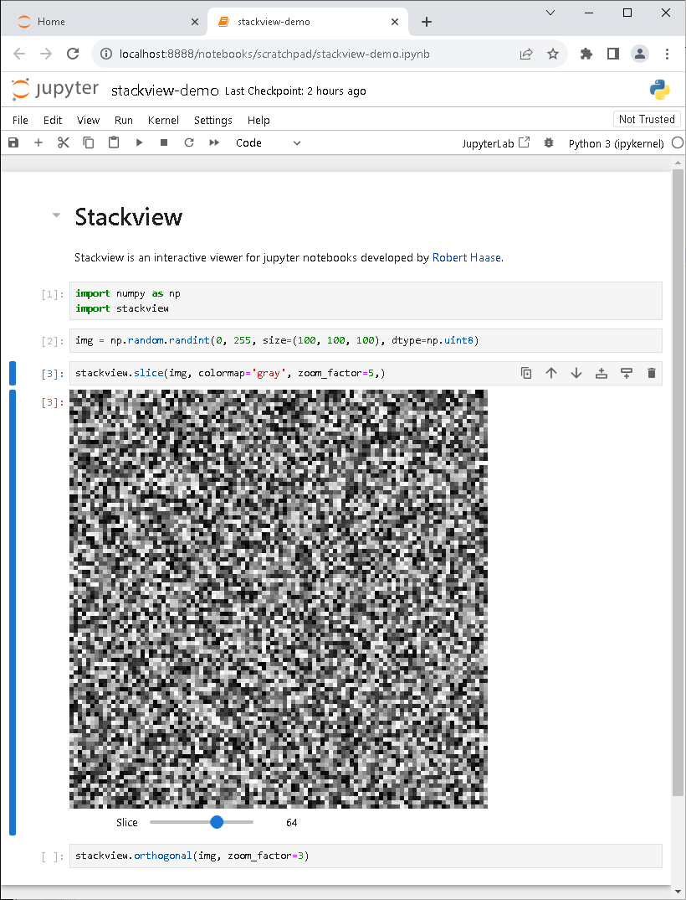
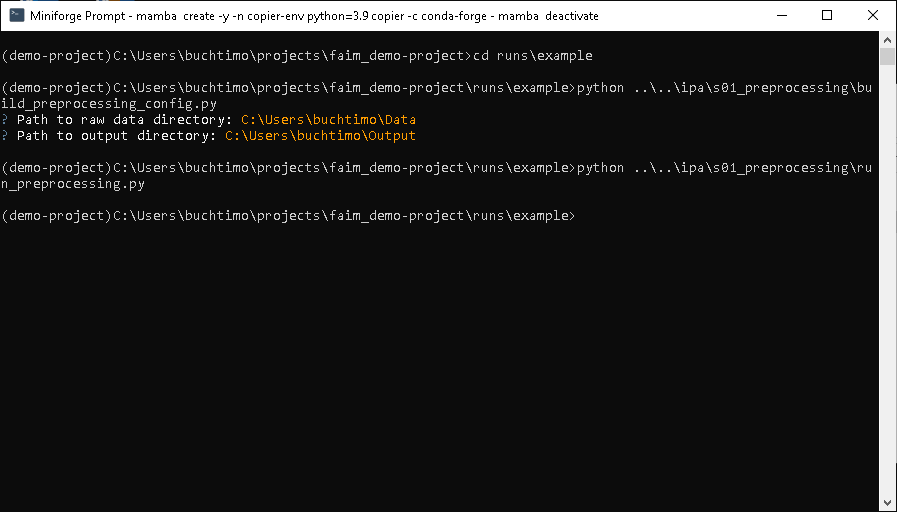
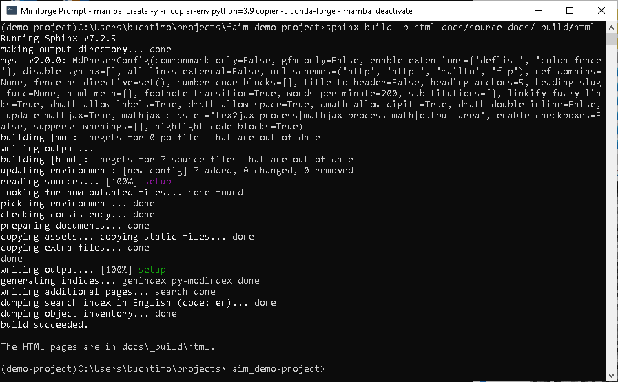
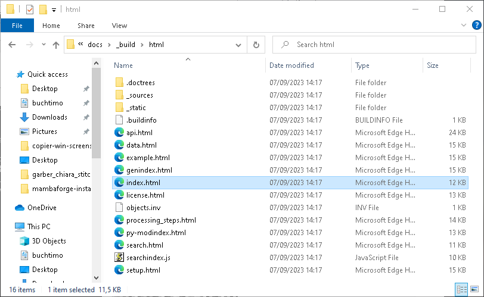
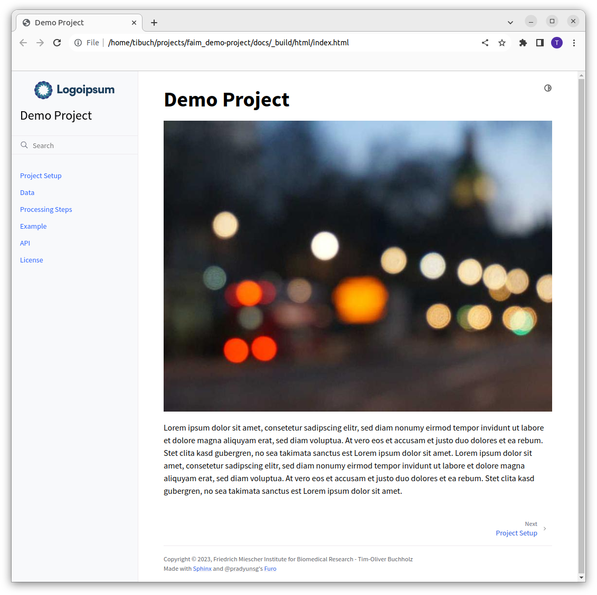

Working with your Project¶
Our vision for image processing and analysis projects is to grow with you.
When you start you are most likely still trying out different tools and ideas on your data.
This is the time where the scratchpad comes in handy.
Just drop all your ongoing notes and code snippets in there and keep on developing.
With time you will start developing more advanced codes and scripts.
When you have reached a point where a certain script is stable and you want to use it to run on more than just the test image, it is time to move it from scratchpad to ipa.
In the ipa directory we want to keep scripts which are used to process our data and obtain solid results.
This also means that we might have to invest a little time into documenting our functions and make the script runnable with a config file.
Having a config file makes it easier to re-run the same script on different data.
Now that you have your first script, which can be reused on different data, it is time to spend a little time on documentation. We prepared your project to use shpinx to render a nice website with your documentation. For now this website can only be seen locally on your machine. However, only a few steps are necessary to publish the whole documentation and project description, making your project accessible to others.
Note
Here, we will give a short introduction to Python for image processing and analysis. However, you can use any tool you like for your data analysis (e.g. Fiji, MATLAB, R, …).
Jupyter Notebook¶
We have already created the Python environment in the last step of the installation guide and it should currently be active i.e. your command line prompt is prefixed with the environment name.
Enter the following command to start a jupyter server:
jupyter notebook
A lot of text will start appearing in your command line and it will stay blocked while the server is running:

Simultaneously, a browser window should have opened:

Since we have started the jupyter server out of our project root directory we can see all its contents.
You can navigate through the directories and inspect all files.
For now we want to change into scratchpad and double click on stackview-demo.ipynb.

You can execute the code-cells by pressing the small play button ▶︎.

To terminate the jupyter server hit Ctrl + C twice in your command line prompt.
ipa Scripts¶
We provide some example scripts in the ipa directory.
However, we do not run them inside the ipa directory, but inside the runs directory.
Each run should get its own run-directory.
So far we have a run-directory called example.
If you start fresh it does only contain a README.md file, outlining how to run the scripts in ipa.
Our approach is to have a script to build a config file and a script to run the computation for each processing step. The build config script will ask the user for input parameters and write them into a config file.
To build a new preprocessing_config.yaml file enter the following command:
python ..\..\ipa\s01_preprocessing\build_preprocessing_config.py
After answering all questions the preprocessing_config.yaml will appear in the example directory.
Now you can run the preprocessing script with:
python ..\..\ipa\s01_preprocessing\run_preprocessing.py

After running the script a log-file will appear in the example directory.
Build docs¶
The last step is to build the documentation website. For this you simply run this command from the project root directory:
sphinx-build -b html docs/source docs/_build/html

The built html pages are now available in docs/source/_build/html:

Open the index.html page with your browser and you can start browsing through your documentation:

This is a static website, which is at the moment only available on your machine.
You can take the whole html directory and host it somewhere if you want to make the contents publicly available.
Updating the Documentation¶
The source for the documentation is stored in docs/source:
- index.md
This is the welcome page of your documentation. Its content is a copy of the content between
<!-- start abstract -->and<!-- end abstract -->in the root directoryREADME.md. Like this we don’t have to worry about updating the abstract in two places.- setup.md
Contains information about installing the necessary tools. The content is included from
infrastructure/README.md.- data.md
This is the first page which does not take any information from anywhere. This is the place to provide more information about the data of your project.
- processing_steps.md
This is a mixed file. The beginning is imported from
runs/example/README.md. The second half describes the individual processing steps in plain language.- example.md
It is always nice to have a small example in your documentation. It should be something that runs in seconds, but still demonstrates what and how it is done.
- api.md
This is the most advanced part of the documentation. We use the sphinx autodoc functionality to list all our documented Python functions automatically.
- license.md
This just displays the license from the
LICENSEfile in the root directory.
Everytime you change one of the README.md files, doc-strings in the ipa scripts or one of the above files you must rebuild the documentation to get an updated website.
Conclusion¶
Considering these guidelines from the beginning of your project and structuring your image processing and analysis accordingly will benefit you throughout your research project. The proposed directory structure can be placed under git version control and uploaded to GitHub. When it comes time to publish your work, a simple transition to a public GitHub repository will make your research FAIR. This empowers both you and fellow researchers, facilitating easier and more efficient collaboration while building upon your discoveries.